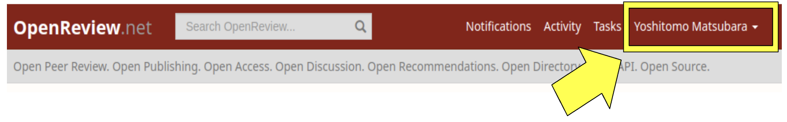
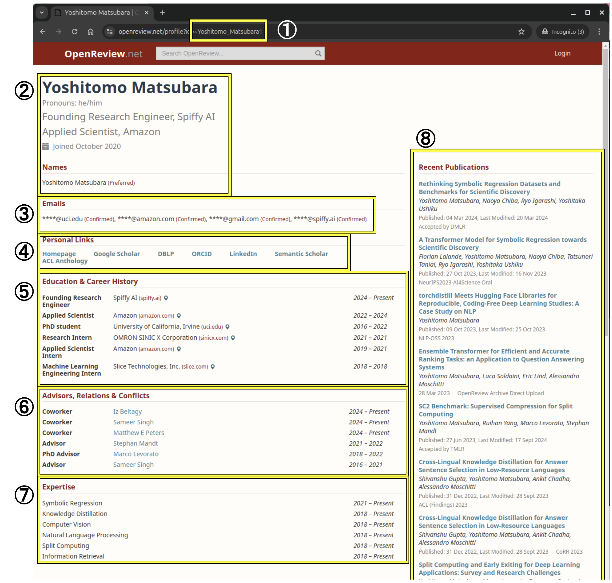

How to Complete Your OpenReview Profile
Profile Update Deadline: Nov 16, 2025
OpenReview Portal: https://openreview.net/profile
To ensure effective paper-reviewer matching and accurate conflict-of-interest detection, all participants in the CVPR 2026 review process must maintain complete and current OpenReview profiles.
Requirements: All authors, reviewers, area chairs, senior area chairs, and program chairs must have completed OpenReview profiles. This is mandatory for CVPR 2026 participation.
Important Notes for Authors
- Authors must have OpenReview profiles to be added to paper submissions.
- No author additions or removals will be accepted after the abstract submission deadline.
- Incomplete author registration will result in desk rejection.
Profile Completeness Requirements
A complete OpenReview profile for CVPR 2026 must include all eight
criteria below. Your profile must also be visible to organizers.
To verify visibility: Log out of OpenReview (or use incognito
mode) and check how your profile appears to the public.
1. OpenReview ID
Your OpenReview ID is crucial for all communications and submissions. To find your ID:
- Log into OpenReview
- Click your profile in the top right corner
-
Your ID appears in the URL (e.g.,
~Yoshitomo_Matsubara1fromhttps://openreview.net/profile?id=~Yoshitomo_Matsubara1)

2. Name and Current Position
Ensure your name is correct and your current positions are listed.
Current positions display automatically when you complete the
"Education & Career History" section below.
Note: If you do not have any current affiliations,
you can type "Independent Researcher" in the "Position" field.
3. Confirmed Email Address
Requirement: At least one confirmed email address.
- Add email addresses to your profile
- Check your email for verification messages
- Complete verification for each address
- Confirmed domains will show "(Confirmed)" labels in your profile
4. Personal Links
DBLP Profile:
- Check if your profile exists at https://dblp.org/pers/
- If found, add the URL to your OpenReview profile
- Import publications by clicking "Add DBLP Papers to Profile". Even if your DBLP link is displayed, please click "Add DBLP Papers to Profile" to import your recent publications.
- Note: If you see "disambiguation link" errors, contact DBLP to resolve the issue.
Links: Add URLs for your Personal homepage, Google Scholar profile, and Semantic Scholar profile. These links help Area Chairs recommend appropriate reviewers for papers.
5. Education & Career History
Add all previous and current positions with complete information. Required fields for each position:
- Position title
- Start year
- End year (leave blank for current positions)
- Institution information (including domain name)
- Institution country/region (visible when hovering over map icon)
6. Advisors, Relations & Conflicts
Add all individuals who may represent conflicts of interest, including previous and current advisors, students, co-workers, collaborators, and other relevant professional relationships. Required fields for each person:
- Relationship type
- Name
- Start year
- End year (leave blank if relationship continues)
- Visibility setting (Choose either "everyone" or "thecvf.com/CVPR/2026/Conference" from the dropdown menu)
7. Expertise
List your research areas of interest with specific detail. Required fields for each area include Area name(s), Start year, and End year (leave blank for current areas).
Best practices for better paper assignments:
- Avoid overly broad topics like "computer vision"
- Include specific subfields reflecting your research background and current interests
- Examples: 3D vision, scene understanding, object detection, medical imaging, robotics, etc.
8. (Recent) Publications
This section should populate automatically if you have imported DBLP papers (even if your DBLP link is displayed, please click "Add DBLP Papers to Profile" to import your recent publications) or published at other OpenReview venues.
Your publications should reflect your expertise in areas relevant to CVPR. For interdisciplinary researchers, you can curate which publications are used for reviewer/AC matching through the Expertise Selection tool (see Additional Instructions below).
For missing publications: If your papers aren't captured by DBLP and don't appear in your profile, manually upload them at OpenReview Archive.
Additional Instructions for Reviewers and Area Chairs
To maximize appropriate paper assignments matching your expertise, follow these steps:
1. Update Expertise Field
Ensure your "Expertise" section (Step 7 above) is current and specific. Avoid generic terms like "computer vision" and include specific subfields matching your research background and interests.
2. Complete Expertise Selection in Console
Access path: Reviewers/Area Chairs Console → Reviewers/Area Chairs Tasks
2.1 Paper Inclusion/Exclusion
By default, all your papers are used for affinity matching. You can customize this from "Reviewers/Area Chairs Expertise Selection":
- View your complete paper list
- Click "Exclude" to remove papers from CVPR 2026 matching
- Excluded papers won't be used to compute your matching scores
2.2 Import Additional Papers
Two options for adding unlisted papers:
- Option A: Direct upload. Click "OpenReview Archive Direct Upload" and upload your papers directly.
- Option B: DBLP import. Edit your OpenReview profile and click "Add DBLP Papers to Profile" (see Section 4: Personal Links).

Questions? Contact the organizers using your primary OpenReview email address and include your OpenReview ID for faster assistance.